Part A: Image Warping and Mosaicing
Overview
In this project, I used multiple photographs to create image mosaics by registering, projective warping, and resampling them. I computed homographies to warp images. Later in part B, I learned to create algorithms like ANMS and RANSAC which are applied to creating mosiacs automatically as opposed to hand selecting points.
Part A.1: Image Acquisition
To create a mosaic, we need images that share a projective transformation. I captured these by fixing my camera's center of projection (keeping the camera in one spot) and rotating it to capture overlapping scenes. I ensured there was about 50-70% overlap between images to make registration easier.
Image Set 1: Stairs
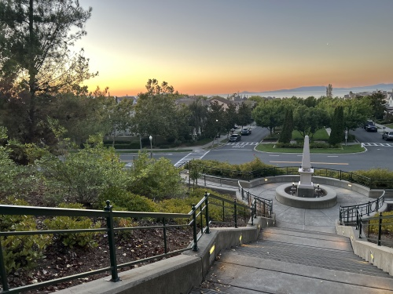
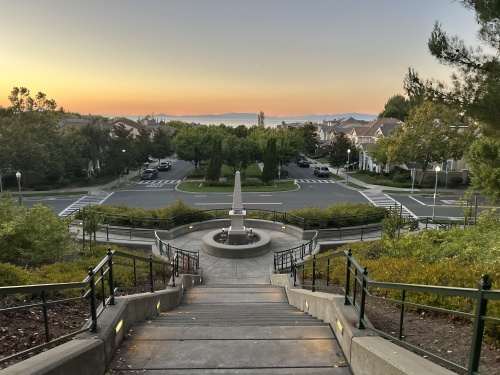
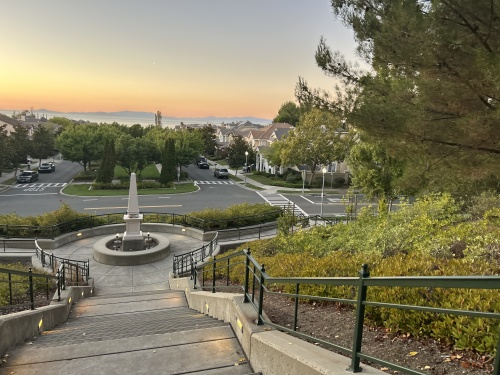
Image Set 2: NERDS
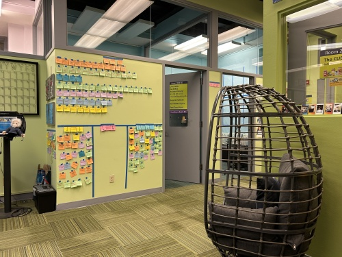
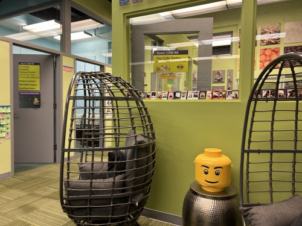
Image Set 3: Gazebo
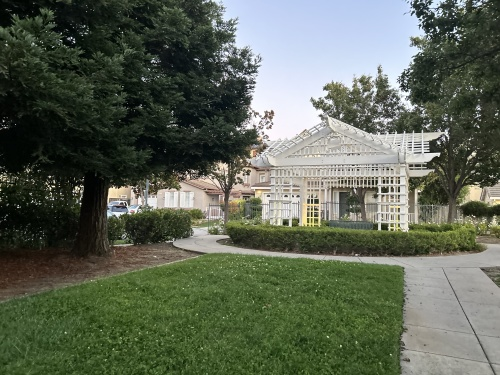
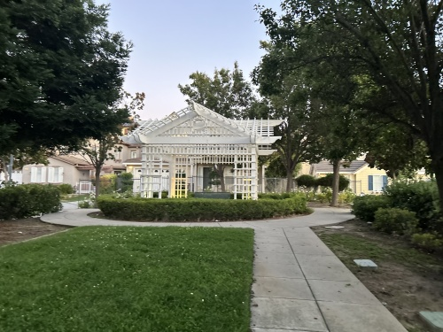
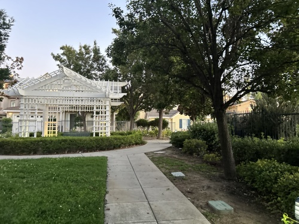
Part A.2: Homography Calculation
To capture photos that blend well, we require transforms between them are projective (a.k.a. perspective) by fixing the center of projection and rotating my camera while capturing photos.
A homography is a projective transformation between two planes
The transformation can be shown by H, a 3x3 matrix H:
$$ H \cdot p_{\text{original}} = p_{\text{transformed}} $$ $$ \begin{bmatrix} h_1 & h_2 & h_3 \\ h_4 & h_5 & h_6 \\ h_7 & h_8 & 1 \end{bmatrix} \begin{bmatrix} x \\ y \\ 1 \end{bmatrix} = \begin{bmatrix} wx' \\ wy' \\ w \end{bmatrix} $$We can solve for H by solving a system of equations with eight degrees of freedom, using the keypoints we generated using this tool. Full set of points:
$$ \begin{bmatrix} x_1 & y_1 & 1 & 0 & 0 & 0 & -x'_1 x_1 & -x'_1 y_1 \\ 0 & 0 & 0 & x_1 & y_1 & 1 & -y'_1 x_1 & -y'_1 y_1 \\ x_2 & y_2 & 1 & 0 & 0 & 0 & -x'_2 x_2 & -x'_2 y_2 \\ 0 & 0 & 0 & x_2 & y_2 & 1 & -y'_2 x_2 & -y'_2 y_2 \\ \vdots & \vdots & \vdots & \vdots & \vdots & \vdots & \vdots & \vdots \\ x_n & y_n & 1 & 0 & 0 & 0 & -x'_n x_n & -x'_n y_n \\ 0 & 0 & 0 & x_n & y_n & 1 & -y'_n x_n & -y'_n y_n \end{bmatrix} \begin{bmatrix} h_1 \\ h_2 \\ h_3 \\ h_4 \\ h_5 \\ h_6 \\ h_7 \\ h_8 \end{bmatrix} = \begin{bmatrix} x'_1 \\ y'_1 \\ x'_2 \\ y'_2 \\ \vdots \\ x'_n \\ y'_n \end{bmatrix} $$We solve this with a least-squares to find the minimum norm solution with more than four points. We want more points than the min 4 in order to make our homography recovery more robust against noise.
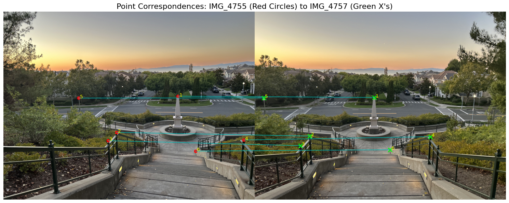
Homography Matrix H for the stairs:
[[ 1.45281512e+00 4.04663193e-02 -1.62815211e+03] [ 1.80130483e-01 1.31503253e+00 -4.76380849e+02] [ 9.65177946e-05 2.85827261e-05 1.00000000e+00]]
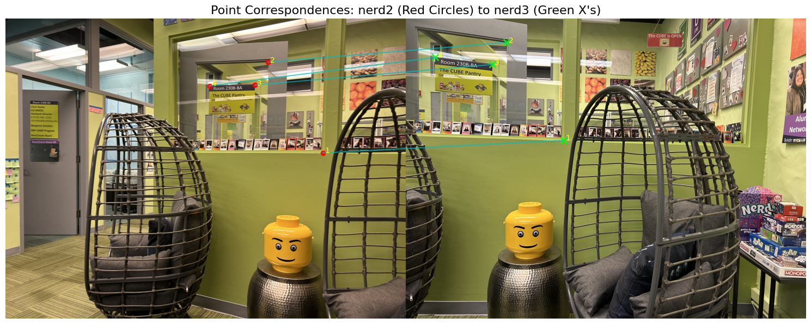
Homography Matrix H for NERDS:
[[ 2.52466995e+00 5.18764306e-03 -4.67380964e+03] [ 4.87313912e-01 2.05847287e+00 -1.71587017e+03] [ 3.78037071e-04 -4.85965410e-05 1.00000000e+00]]
Part A.3: Image Warping & Rectification
I implemented a warping function that takes the source image and the homography matrix $\mathbf{H}$ corresponding to the transformation from the source to the target image. For each point in the polygon, I reverse interpolate from the source image by applying $\mathbf{H}^{-1}$ to recover the corresponding point in the source images.
**ADD HERE**Show results for both interpolation methods and compare the quality. Discuss the trade-offs between speed and quality. Some tips from staff:
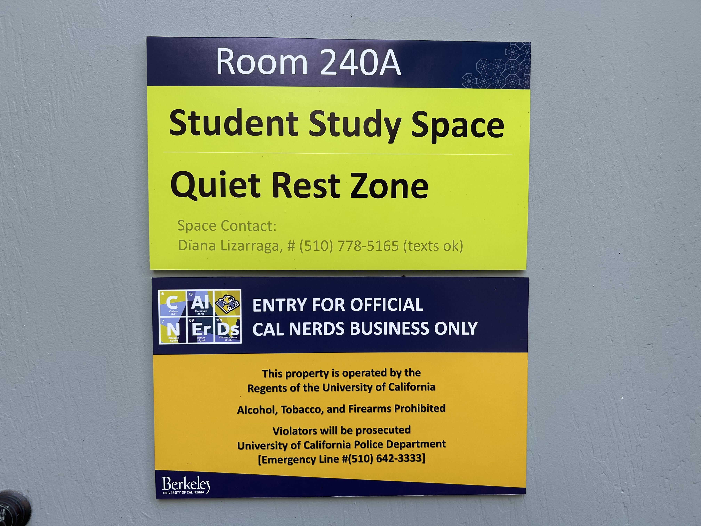
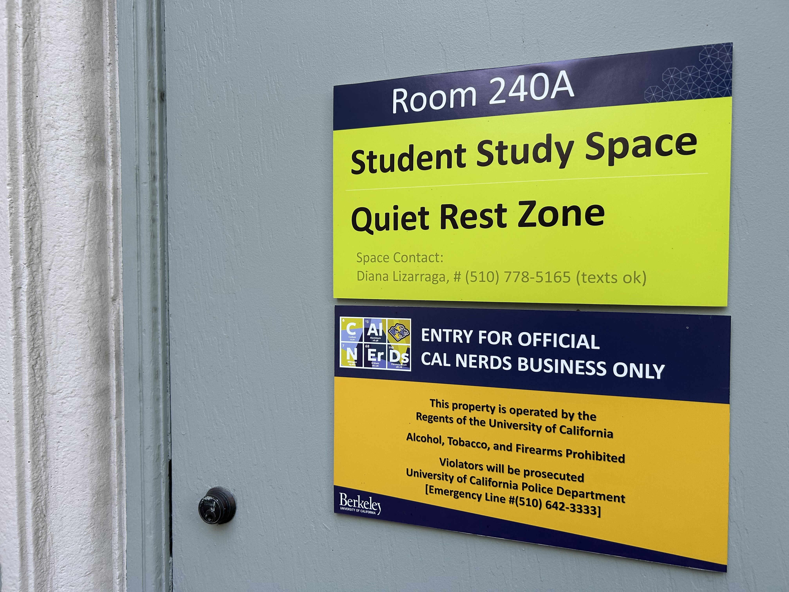
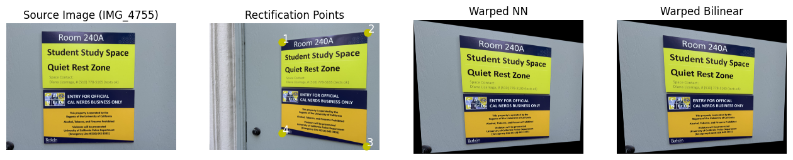
For the second example, I sourced a poster image from the web. :o
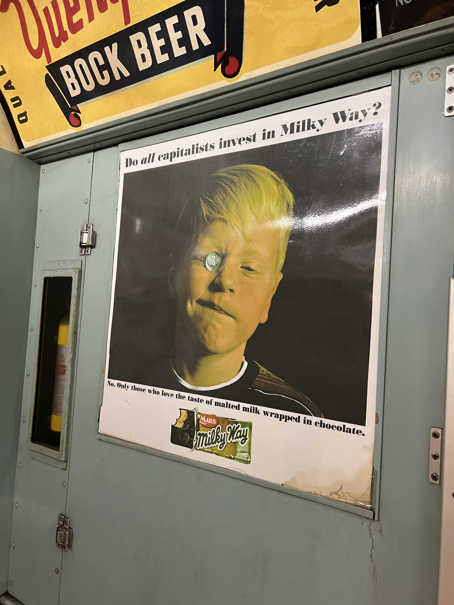
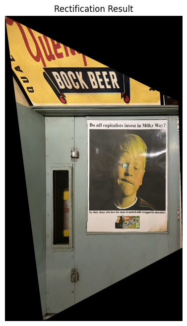
Part A.4: Blend the Images into a Mosaic
[Explain your blending procedure here. To avoid edge artifacts, I used weighted averaging. I created an alpha mask for each warped image based on the distance from its center using a distance transform (bwdist). At each pixel in the final mosaic, the color is a weighted average of the overlapping images, using their corresponding alpha values as weights. This creates a smooth "feathering" effect at the seams. I warped all images into a single, larger canvas whose size was computed to encompass all transformed images.]
Mosaic 1: Stairs
Source Images:
Resulting Mosaic:

Mosaic 2: Gazebo
Source Images:
Resulting Mosaic:

Mosaic 3: NERDS
Source Images:
Resulting Mosaic:

Part B: Automatic Image Stitching
In this part of the project, I implemented an automatic mosaicing pipeline based on the paper "Multi-Image Matching using Multi-Scale Oriented Patches" by Brown et al. This involved automatically detecting features, describing them, matching them, and using a robust algorithm (RANSAC) to find the correct homography.
B.1: Harris Corner Detection and ANMS
[Explain the process here. I first used the provided Harris corner detector to find interest points in the image. This resulted in many clustered points. To get a more spatially distributed set of features, I implemented Adaptive Non-Maximal Suppression (ANMS). For each point, ANMS finds the minimum radius to the nearest neighbor that has a stronger corner response, and I keep the points with the largest radii.]
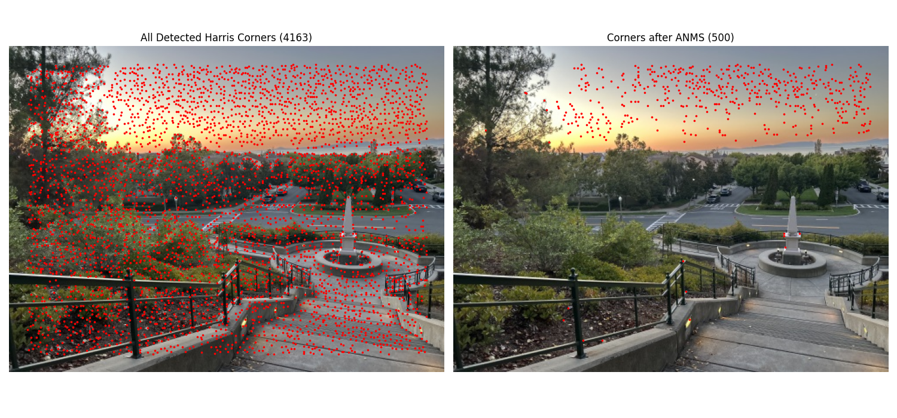
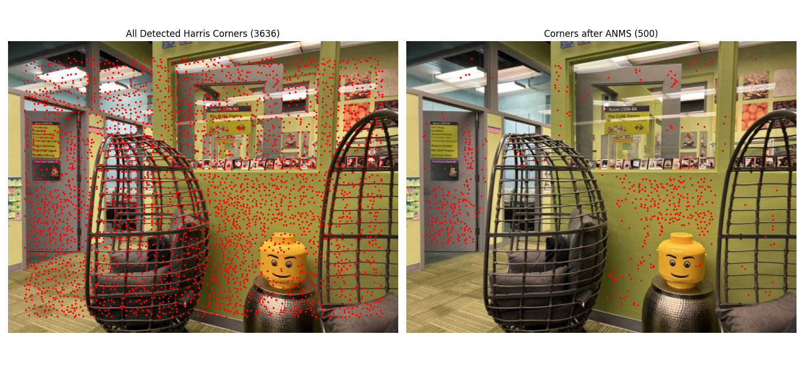
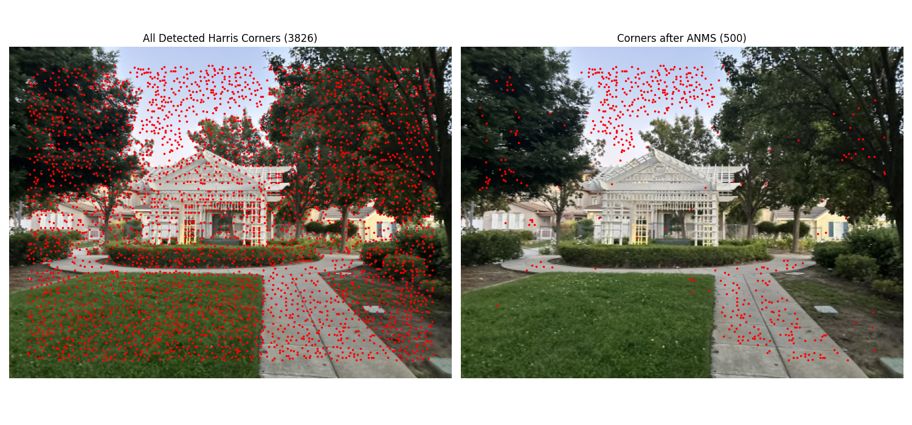
B.2: Feature Descriptor Extraction
[Explain your implementation here. Following Section 4 of the paper, I extracted a feature descriptor for each point from ANMS. I first sampled a 40x40 patch, blurred it, and downsampled it to an 8x8 patch. This blurring and downsampling makes the descriptor more robust to small shifts. Finally, I normalized the 8x8 patch to be zero mean and unit variance, which makes it invariant to bias and gain (affine changes in intensity).]
Below are visualizations of some of the 64-dimensional feature vectors, reshaped back into 8x8 patches for viewing.
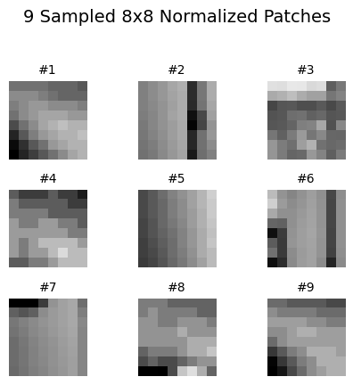
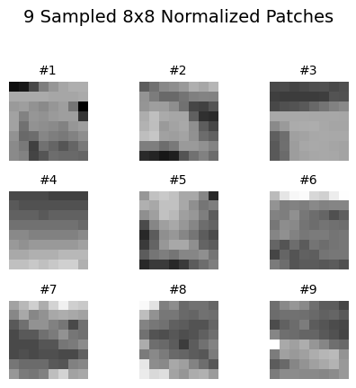
B.3: Feature Matching
[Explain the feature matching process. I implemented the matching strategy from Section 5. For each feature descriptor in the first image, I found its first and second nearest neighbors in the second image using Euclidean distance. I used Lowe's ratio test: a match was accepted only if the ratio (distance to 1st NN) / (distance to 2nd NN) was below a threshold. I chose a threshold of 0.6, as it provided a good balance between finding correct matches and rejecting false positives.]
Feature matches found between two images (prior to RANSAC):
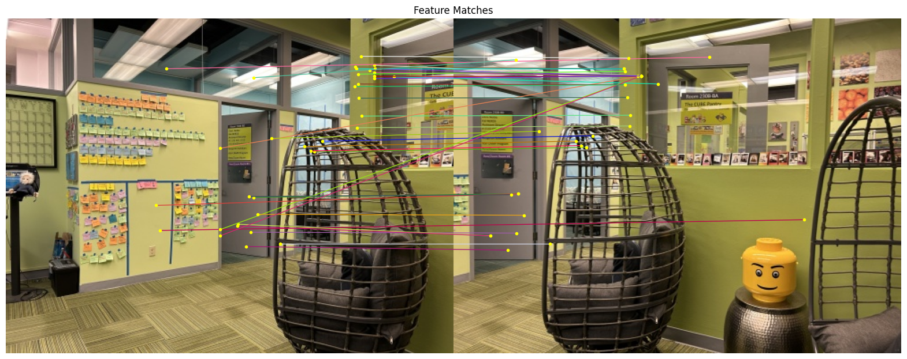
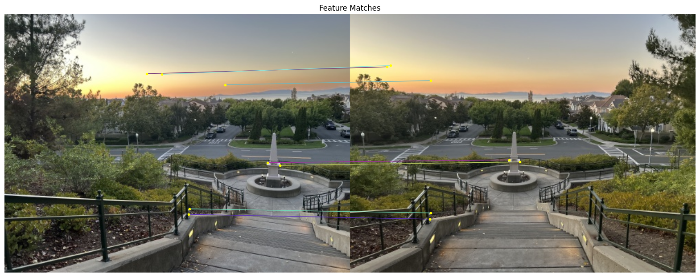
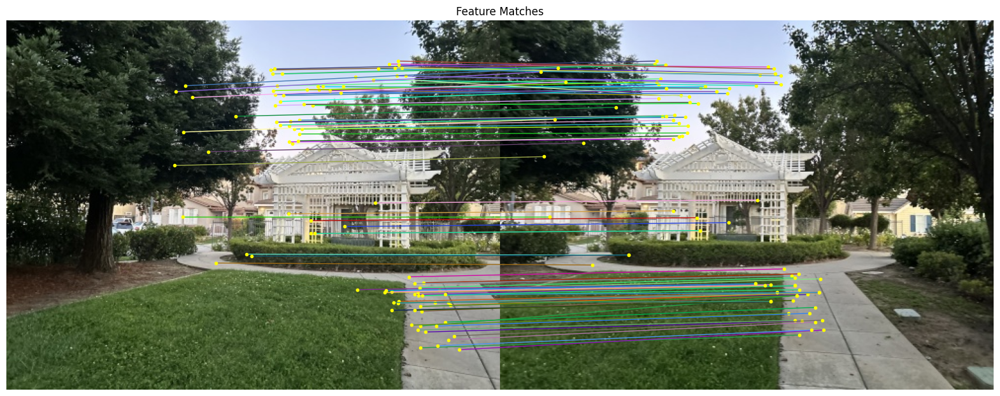
B.4: RANSAC for Robust Homography
[Explain your 4-point RANSAC implementation. The feature matches from B.3 still contained outliers. To robustly compute the homography, I implemented RANSAC. My algorithm loops 10,000 times:
1. Randomly select 4 feature pairs.
2. Compute the exact homography H from these 4 pairs.
3. Transform all feature points from image 1 using H.
4. Count the number of "inliers": points whose transformed location is within a small pixel threshold (e.g., 5 pixels) of their matched point in image 2.
After all iterations, I keep the homography that had the largest set of inliers and re-compute H using all inliers from this set to get a more stable result.]
Manual vs. Automatic Stitching Comparison
Here is a side-by-side comparison of the mosaics from Part A (manual points) and Part B (automatic pipeline w/ RANSAC) using the same sets of images.
.png)
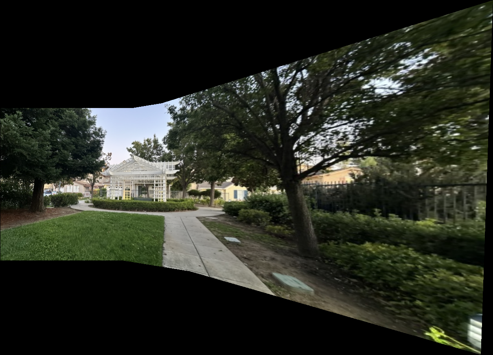
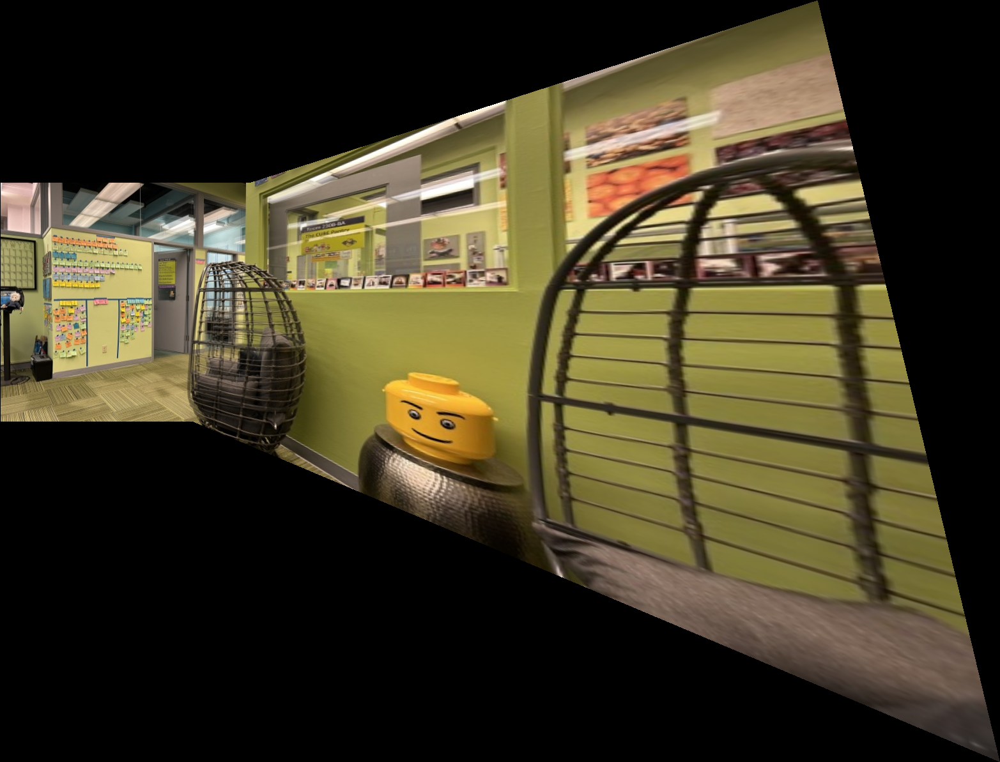